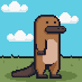
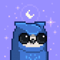
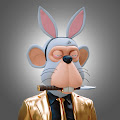
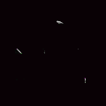

Kuroro Ferry Tickets 该系列包含前往黑吕岛所需的渡轮票。它们将免费兑换以获得您的游戏内野兽。多游戏生态系统 | 野兽是这个宇宙的中心人物 | MMORPG 演示：正如我们所说，数百名
Kwani Studio Kwani StudioNFT 艺术家 | 音乐家。Kwani Studio是一个 NFT（Non-fungible token）集合。存储在区块链上的数字艺术品集合。总共有 41 个
KyotosWorld 京都世界，京都世界是受 JINGOO 启发而生活在京都世界的 1400 个角色的集合。京都是独一无二的，帮助我们引领 CC0 趋势。我们正在开发一个 Discord 服务器，感谢迄今为止我
L4artiste - Limited Editions 月亮在阿拉伯文化中一直是象征性的和明显的。从假期到音乐，到文学，再到迷信，月亮已经在我们日常生活的许多内部运作中显现出来。视觉艺术家 | 来自摩
La Grande Armee de Napoleon La Grande Armée是拿破仑战争期间法国皇帝拿破仑·波拿巴指挥的法国帝国军队的主要军事组成部分。从 1804 年到 1809 年，它赢得了一系列军事胜利，使法兰西帝国
Lacoste UNDW3 Official Lacoste UNDW3：Genesis Pass 是以太坊区块链上的 11,212 个集合，作为 UNDW3 体验的第一轮。参与这次冒险的先驱者将跟随 Lacoste 品牌展开合作之旅，获得所有即将到来
Lady KILLAz 9971 名同伴 Lady KILLaz 为他们在 Crash City 的位置而战。 通过参加高额赌注、PVP、3D 平台体验来赢得 $KILL。 在基于技能的战斗中与玩家下注，看看您是否有能力超
Lady Lions Official Collection 10,000 只雌狮在塞伦盖蒂跋涉中寻找懒惰的国王岛！Purrrfect Advantage Awards 计划、项目流动资金池等等！Lady Lions Official Collection 是一个 NFT（非同质代币）系列。存储
Lady Llamas Collection Lady Llamas 是 3,000 只毛茸茸的、超级时尚且超棒的雌性 Llamas 的集合。它们很可爱，很悠闲，是 LBL 生态系统发展的下一步。多年前，这群羊群失去了 100 头美洲驼，原因是他们
LAGO Pass Official LAGO Pass 是您在虚拟世界、现实生活中以及其他地方获得非凡体验的通行证。通行证授予豪华 LAGO 框架的所有权和对创始人集体的访问权。铸造 LAGO 通行证后，持有者将
Laid Back Llamas Collection 7,000 只悠闲的美洲驼已经占领了元宇宙的数字山脉。每只美洲驼都是独一无二的，具有不同的皮毛颜色、发型、表情、帽子、色调等。从我们在 SandBox 和 NFT Worlds 中的元宇
Land : Joseon Dynasty 欢迎来到神秘的朝鲜王朝，如果在未来治理中确定了土地所有者资格，您可以在自己的土地上使用 JD People NFT 进行耕种。土地所有者也可以将土地借给佃农并从他们
Larva Breads Larva Breads 是一个 NFT（非同质代币）集合。存储在区块链上的数字艺术品集合。总共有 4,999 个 Larva Breads NFT。目前，1,210 位业主的钱包中至少有一个 Larva Breads NTF
Larva Doods Larva Doods 是 8,888 个 Doods 的集合。灵感来自红极一时的 Larva Lads 系列和可爱风格的 Doodles - 这些 Doods 将留在这里并准备参加派对！ 加入俱乐部，然后前往我们的 discord 与其他酷 Doods 一起感受
Larva eggs 在 Erc-721 上收集 5k 待煮鸡蛋。购买一个鸡蛋并成为这个 Eggcellent 社区的一部分。幼虫卵是一个 NFT（非同质代币）集合。存储在区块链上的数字艺术品集合。 总共有 537 个
LARVA-OFFlCIAL 欢迎来到 OpenSea 上的 LARVA-OFFICIAL 之家。发现这个系列中最好的项目。LARVA-OFFlCIAL 是一个 NFT（非同质代币）集合。存储在区块链上的数字艺术品集合。
LarvaMoonbirds 3,000 只随机生成的幼虫，带有月鸟 DNA 突变 没有路线图没有不和谐只有共鸣 在 Etherscan 上售罄 | 推特现在直播…我知道我们说过我们不会，但我们在这里&
LaserCat NFT 真正拥有者数量：488。Lasercat NFT 质押总数：437（截至 2022 年 5 月 7 日） LaserCat NFT（总共 520 个），Discord 上私人频道的通行证，不仅是
Last APELIST Collection 您进入机会之殿的钥匙 - 让您可以访问独家白名单、工具和 web3 机会。Ape List 是BAYC、MAYC、CloneX、AZUKI、Meebits 和 Damien Hirst 持有
Layer Zero Punks | ETH Layer Zero Punks 是第一个探索全链的朋克，利用 LayerZero 技术来遍历链。Layer Zero Punks 是第一个探索全链的朋克，利用 LayerZero 技术来遍历链。 只需在您的钱包上连接到您想要的链
Lazy 8ight Yacht Club Official 世界上第一家 Web3 游艇租赁和豪华活动策划公司DM 我们预订您的项目的下一个活动。Lazy 8ight Yacht Club Official是一个 NFT（不可替代代币）集合。存
LoserChick-LaborChick LaborChick 有一个迷人的职业，令人羡慕的能力，但从来没有得到应得的报酬，那不是你的狗屎日子吗？他尖叫着表达不满，他产生的力量微弱，但仍然比特朗普和老板
LushSux.io LushSux.io NFT 在过去 7 天内售出 2 次。LushSux.io 的总销售额为 31.61 美元。LushSux.io NFT 的平均价格为 15.8 美元。LushSux.io 拥有者 1,996 名，
MBC Fananees Genesis Collection 中东和北非地区首个由 MBC 集团正式支持的 NFT 项目。 Fananees Genesis Collection 将 MBC 最受欢迎的斋月角色带入令人兴奋的数字收藏品世界。 该系列包括来自 MBC 流行迷你系列的 7 个角色
 Mighty Warbles 6969 Warbles 摇摇晃晃地直奔虚拟世界！Mighty Warbles 是一个由大量特征随机构建的创世纪集合。拥有无限的组合可能性，每个 Mighty Warble 都是独一无二的！Mighty Warbles
MOAR by Joan Cornella ** Joan Cornellà 的 MOAR ** 是 FWENCLUB 自豪地呈现的虚拟世界中一座不寻常的豪宅，其中 5,555 个生物的灵魂使用 ERC721 区块链作为 NFT 铸造而成。这些“和平共处”的人类、
 Moonbirds 它们是 10,000 个启用实用程序的 PFP 的集合，具有丰富多样且独特的稀有特性池。 更重要的是，每只 Moonbird 都可以解锁私人俱乐部会员资格和额外福利，您持有的时间越长
Mr Bean X Fomo Lab Official Collection Mr Bean NFT 系列由 2,222 个独特的 NFT 组成，以纪念 Mr Bean 的异想天开和古怪的冒险。所有属性均来自官方憨豆先生动画系列。该系列是 Bean 先生通过 Fomo Lab 进入市场的 Web3 和 Metaverse 空
NFT Bored Bad Bunny Bored Bad Bunny 是 Bored Bunny 的第二个系列，由 11,111 个独特的 3D 精心设计的兔子联合起来进入以太坊区块链每个 Bored Bad Bunny 都是基于 250 多个特征的独特和独家的。 我们希望围绕 NFT 建立
 NFT Bored Bunny 无聊的兔子是 4,999 只独特的 3D 精心设计的兔子的集合，它们联合在一起进入以太坊区块链每个无聊的兔子都是独一无二的，基于一百个特征。目标是围绕 NFT 建立最
 NFT The Hustlers of Wall Street The Hustlers Of Wall Street 是一个由 4,444 个 HWS NFT 组成的独特集合，由一个令人难以置信的社区拥有。- 我们的会员投票选出他们想看的活动地点和比赛。HOLDERS 组可用。
NO MINT! test Collection PantherBros 没有薄荷！过去 7 天内售出的测试系列。 没有薄荷！测试合集 NFT - 常见问题（FAQ） ▶ 什么是零薄荷！测试收藏？ 没有薄荷！test Collection 是一个 NFT (Non-fungible token) 集合。
NuBloom Fractal NuBloom: Fractal 是使用 Lindenmayer 系统生成的 8888 种独特花卉的集合，该系统迭代地重写字符串以创建分形图案。该系列将在购买时自动在 OpenSea 上铸造，并将成为第一代 NuBloom 花。每一代人
Nuclear Nerds of the Accidental Apocalypse 由于飞行员诺曼·F·波拉斯基（以及他放错地方的奶酪牛排）的判断失误，我们很遗憾地通知您，2021 年 12 月 15 日，美国从北美发动了一次意外的核打击
Nudie Community Official Nudies 是由 Hayley Elsaesser 设计的 816 个特征组成的 10,000 个 NFT 的集合。 每个 NFT 都拥有专有的 IP 权利和 Nudie 社区的会员资格。成员资格包括功能实用的实用程序和不断增长的社区驱动功
Nyan Aoki 每个 Nyan Aoki NFT 将奖励所有者一件免费的 Dim Mak 系列限量版 Aoki x Nyan Cat 夹克（兑换期约为活动结束后 6-8 周） Nyan Aoki NFT - 常见问题（FAQ） ▶ 什么是 Nyan Aoki？ Nyan Aoki 是一
Nyan Cat V4 Nyan Cat（官方）NFT - 常见问题（FAQ） ▶ 什么是 Nyan Cat（官方）？ Nyan Cat (Official) 是一个 NFT (Non-fungible token) 集合。存储在区块链上的数字艺术品集合。 ▶ 有多少 Nyan Cat
Obey Make Art Not War Ukraine 我很高兴地宣布将于2022 年 9 月 25 日至 2023 年 7 月 23 日在德克萨斯州达拉斯当代艺术中心举办我的首次个展！我的展览 Backward Forward 解决了美国和整个地球面临的许多
Ocarinas ▶ 什么是陶笛？ Ocarinas 是一个 NFT（不可替代令牌）集合。存储在区块链上的数字艺术品集合。 ▶ 存在多少 Ocarinas 代币？ 总共有 1,626 个 Ocarinas NFT。目前，495 位所有者
Occhiali Neri NFT by Dario Argento 为了庆祝惊险大师的伟大回归，Dario Argento 和 Vision Distribution 创建了第一个限量编号版的独特#588 NFTs集合，可以访问独家内容，与演员和 Black Ray 眼镜一起在房间